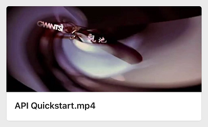
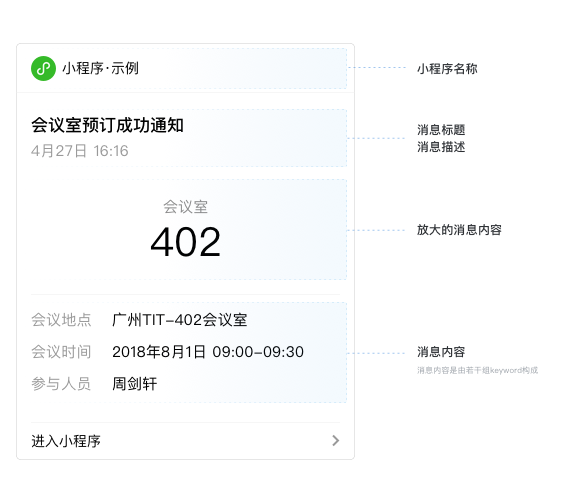
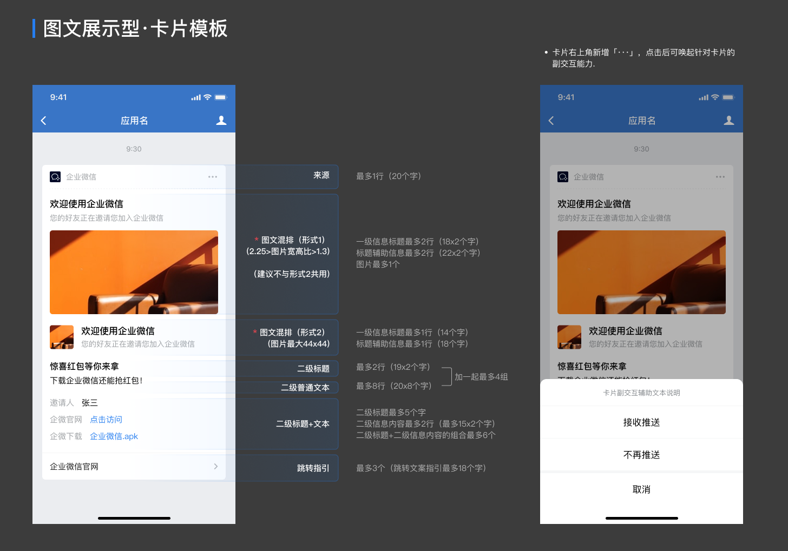
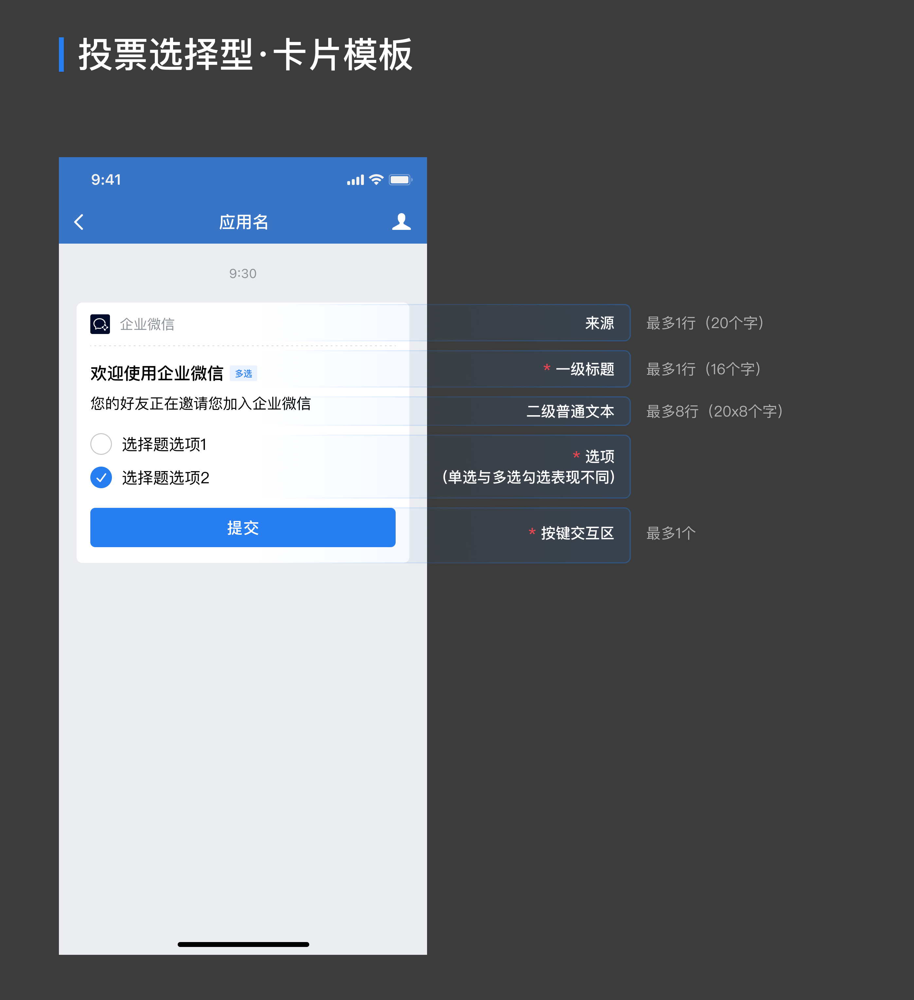
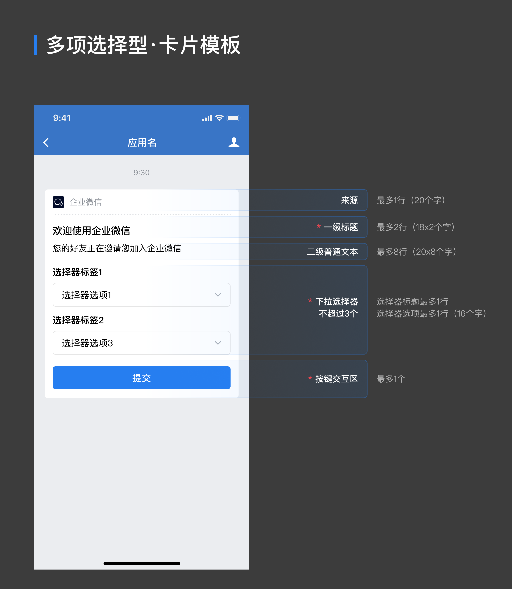

目录
接口定义
应用支持推送文本、图片、视频、文件、图文等类型。
请求方式：POST（HTTPS）
请求地址： https://qyapi.weixin.qq.com/cgi-bin/message/send?access_token=ACCESS_TOKEN
参数说明：
| 参数 | 是否必须 | 说明 |
|---|---|---|
| access_token | 是 | 调用接口凭证 |
- 各个消息类型的具体POST格式请阅后续“消息类型”部分。
- 如果有在管理端对应用设置“在微工作台中始终进入主页”，应用在微信端只能接收到文本消息，并且文本消息的长度限制为20字节，超过20字节会被截断。同时其他消息类型也会转换为文本消息，提示用户到企业微信查看。
- 支持id转译，将userid/部门id转成对应的用户名/部门名，在企业授权了会话内容存档接口权限时，也可以将消息id和群id转成对应的消息内容/群名称，目前仅文本/文本卡片/图文/图文（mpnews）/任务卡片/小程序通知/模版消息/模板卡片消息这八种消息类型的部分字段支持。具体支持的范围和语法，请查看附录id转译说明。
- 支持重复消息检查，当指定"enable_duplicate_check": 1开启: 表示在一定时间间隔内，同样内容（请求json）的消息，不会重复收到；时间间隔可通过duplicate_check_interval指定，默认1800秒。
- 从2021年2月4日开始，企业关联添加的「小程序」应用，也可以发送文本、图片、视频、文件、图文等各种类型的消息了。
调用建议：大部分企业应用在每小时的0分或30分触发推送消息，容易造成资源挤占，从而投递不够及时，建议尽量避开这两个时间点进行调用。
频率限制：每应用不可超过账号上限数*200人次/天（注：若调用api一次发给1000人，算1000人次；若企业账号上限是500人，则每个应用每天可发送100000人次的消息）。每应用对同一个成员不可超过30次/分钟，1000次/小时，超过部分会被丢弃不下发
返回示例：
{ "errcode" : 0, "errmsg" : "ok", "invaliduser" : "userid1|userid2", "invalidparty" : "partyid1|partyid2", "invalidtag": "tagid1|tagid2", "unlicenseduser" : "userid3|userid4", "msgid": "xxxx", "response_code": "xyzxyz" }点击复制
如果部分接收人无权限或不存在，发送仍然执行，但会返回无效的部分（即invaliduser或invalidparty或invalidtag或unlicenseduser），常见的原因是接收人不在应用的可见范围内。
权限包含应用可见范围和基础接口权限(基础账号、互通账号均可)，unlicenseduser中的用户在应用可见范围内但没有基础接口权限。
如果全部接收人无权限或不存在，则本次调用返回失败，errcode为81013。
返回包中的userid，不区分大小写，统一转为小写
参数说明：
| 参数 | 说明 |
|---|---|
| errcode | 返回码 |
| errmsg | 对返回码的文本描述内容 |
| invaliduser | 不合法的userid，不区分大小写，统一转为小写 |
| invalidparty | 不合法的partyid |
| invalidtag | 不合法的标签id |
| unlicenseduser | 没有基础接口许可(包含已过期)的userid |
| msgid | 消息id，用于撤回应用消息 |
| response_code | 仅消息类型为“按钮交互型”，“投票选择型”和“多项选择型”，以及填写了action_menu字段的文本通知型、图文展示型的模板卡片消息返回，应用可使用response_code调用更新模版卡片消息接口，72小时内有效，且只能使用一次 |
消息类型
文本消息
请求示例：
{ "touser" : "UserID1|UserID2|UserID3", "toparty" : "PartyID1|PartyID2", "totag" : "TagID1 | TagID2", "msgtype" : "text", "agentid" : 1, "text" : { "content" : "你的快递已到，请携带工卡前往邮件中心领取。\n出发前可查看<a href=\"https://work.weixin.qq.com\">邮件中心视频实况</a>，聪明避开排队。" }, "safe":0, "enable_id_trans": 0, "enable_duplicate_check": 0, "duplicate_check_interval": 1800 }点击复制
参数说明：
| 参数 | 是否必须 | 说明 |
|---|---|---|
| touser | 否 | 指定接收消息的成员，成员ID列表（多个接收者用‘|’分隔，最多支持1000个）。 特殊情况：指定为"@all"，则向该企业应用的全部成员发送 |
| toparty | 否 | 指定接收消息的部门，部门ID列表，多个接收者用‘|’分隔，最多支持100个。 当touser为"@all"时忽略本参数 |
| totag | 否 | 指定接收消息的标签，标签ID列表，多个接收者用‘|’分隔，最多支持100个。 当touser为"@all"时忽略本参数 |
| msgtype | 是 | 消息类型，此时固定为：text |
| agentid | 是 | 企业应用的id，整型。企业内部开发，可在应用的设置页面查看；第三方服务商，可通过接口 获取企业授权信息 获取该参数值 |
| content | 是 | 消息内容，最长不超过2048个字节，超过将截断（支持id转译） |
| safe | 否 | 表示是否是保密消息，0表示可对外分享，1表示不能分享且内容显示水印，默认为0 |
| enable_id_trans | 否 | 表示是否开启id转译，0表示否，1表示是，默认0。 |
| enable_duplicate_check | 否 | 表示是否开启重复消息检查，0表示否，1表示是，默认0 |
| duplicate_check_interval | 否 | 表示是否重复消息检查的时间间隔，默认1800s，最大不超过4小时 |
touser、toparty、totag不能同时为空，后面不再强调。
文本消息展现：
特殊说明：
其中text参数的content字段可以支持换行、以及A标签，即可打开自定义的网页（可参考以上示例代码）(注意：换行符请用转义过的\n)
图片消息
请求示例：
{ "touser" : "UserID1|UserID2|UserID3", "toparty" : "PartyID1|PartyID2", "totag" : "TagID1 | TagID2", "msgtype" : "image", "agentid" : 1, "image" : { "media_id" : "MEDIA_ID" }, "safe":0, "enable_duplicate_check": 0, "duplicate_check_interval": 1800 }点击复制
请求参数：
| 参数 | 是否必须 | 说明 |
|---|---|---|
| touser | 否 | 成员ID列表（消息接收者，多个接收者用‘|’分隔，最多支持1000个）。特殊情况：指定为@all，则向关注该企业应用的全部成员发送 |
| toparty | 否 | 部门ID列表，多个接收者用‘|’分隔，最多支持100个。当touser为@all时忽略本参数 |
| totag | 否 | 标签ID列表，多个接收者用‘|’分隔，最多支持100个。当touser为@all时忽略本参数 |
| msgtype | 是 | 消息类型，此时固定为：image |
| agentid | 是 | 企业应用的id，整型。企业内部开发，可在应用的设置页面查看；第三方服务商，可通过接口 获取企业授权信息 获取该参数值 |
| media_id | 是 | 图片媒体文件id，可以调用上传临时素材接口获取 |
| safe | 否 | 表示是否是保密消息，0表示可对外分享，1表示不能分享且内容显示水印，默认为0 |
| enable_duplicate_check | 否 | 表示是否开启重复消息检查，0表示否，1表示是，默认0 |
| duplicate_check_interval | 否 | 表示是否重复消息检查的时间间隔，默认1800s，最大不超过4小时 |
语音消息
请求示例：
{ "touser" : "UserID1|UserID2|UserID3", "toparty" : "PartyID1|PartyID2", "totag" : "TagID1 | TagID2", "msgtype" : "voice", "agentid" : 1, "voice" : { "media_id" : "MEDIA_ID" }, "enable_duplicate_check": 0, "duplicate_check_interval": 1800 }点击复制
参数说明：
| 参数 | 是否必须 | 说明 |
|---|---|---|
| touser | 否 | 成员ID列表（消息接收者，多个接收者用‘|’分隔，最多支持1000个）。特殊情况：指定为@all，则向关注该企业应用的全部成员发送 |
| toparty | 否 | 部门ID列表，多个接收者用‘|’分隔，最多支持100个。当touser为@all时忽略本参数 |
| totag | 否 | 标签ID列表，多个接收者用‘|’分隔，最多支持100个。当touser为@all时忽略本参数 |
| msgtype | 是 | 消息类型，此时固定为：voice |
| agentid | 是 | 企业应用的id，整型。企业内部开发，可在应用的设置页面查看；第三方服务商，可通过接口 获取企业授权信息 获取该参数值 |
| media_id | 是 | 语音文件id，可以调用上传临时素材接口获取 |
| enable_duplicate_check | 否 | 表示是否开启重复消息检查，0表示否，1表示是，默认0 |
| duplicate_check_interval | 否 | 表示是否重复消息检查的时间间隔，默认1800s，最大不超过4小时 |
视频消息
请求示例：
{ "touser" : "UserID1|UserID2|UserID3", "toparty" : "PartyID1|PartyID2", "totag" : "TagID1 | TagID2", "msgtype" : "video", "agentid" : 1, "video" : { "media_id" : "MEDIA_ID", "title" : "Title", "description" : "Description" }, "safe":0, "enable_duplicate_check": 0, "duplicate_check_interval": 1800 }点击复制
参数说明：
| 参数 | 是否必须 | 说明 |
|---|---|---|
| touser | 否 | 成员ID列表（消息接收者，多个接收者用‘|’分隔，最多支持1000个）。特殊情况：指定为@all，则向关注该企业应用的全部成员发送 |
| toparty | 否 | 部门ID列表，多个接收者用‘|’分隔，最多支持100个。当touser为@all时忽略本参数 |
| totag | 否 | 标签ID列表，多个接收者用‘|’分隔，最多支持100个。当touser为@all时忽略本参数 |
| msgtype | 是 | 消息类型，此时固定为：video |
| agentid | 是 | 企业应用的id，整型。企业内部开发，可在应用的设置页面查看；第三方服务商，可通过接口 获取企业授权信息 获取该参数值 |
| media_id | 是 | 视频媒体文件id，可以调用上传临时素材接口获取 |
| title | 否 | 视频消息的标题，不超过128个字节，超过会自动截断 |
| description | 否 | 视频消息的描述，不超过512个字节，超过会自动截断 |
| safe | 否 | 表示是否是保密消息，0表示可对外分享，1表示不能分享且内容显示水印，默认为0 |
| enable_duplicate_check | 否 | 表示是否开启重复消息检查，0表示否，1表示是，默认0 |
| duplicate_check_interval | 否 | 表示是否重复消息检查的时间间隔，默认1800s，最大不超过4小时 |
视频消息展现：

文件消息
请求示例：
{ "touser" : "UserID1|UserID2|UserID3", "toparty" : "PartyID1|PartyID2", "totag" : "TagID1 | TagID2", "msgtype" : "file", "agentid" : 1, "file" : { "media_id" : "1Yv-zXfHjSjU-7LH-GwtYqDGS-zz6w22KmWAT5COgP7o" }, "safe":0, "enable_duplicate_check": 0, "duplicate_check_interval": 1800 }点击复制
参数说明：
| 参数 | 是否必须 | 说明 |
|---|---|---|
| touser | 否 | 成员ID列表（消息接收者，多个接收者用‘|’分隔，最多支持1000个）。特殊情况：指定为@all，则向关注该企业应用的全部成员发送 |
| toparty | 否 | 部门ID列表，多个接收者用‘|’分隔，最多支持100个。当touser为@all时忽略本参数 |
| totag | 否 | 标签ID列表，多个接收者用‘|’分隔，最多支持100个。当touser为@all时忽略本参数 |
| msgtype | 是 | 消息类型，此时固定为：file |
| agentid | 是 | 企业应用的id，整型。企业内部开发，可在应用的设置页面查看；第三方服务商，可通过接口 获取企业授权信息 获取该参数值 |
| media_id | 是 | 文件id，可以调用上传临时素材接口获取 |
| safe | 否 | 表示是否是保密消息，0表示可对外分享，1表示不能分享且内容显示水印，默认为0，保密消息支持以下格式文件： txt、pdf、doc、docx、ppt、pptx、xls、xlsx、xml、jpg、jpeg、png、bmp、gif |
| enable_duplicate_check | 否 | 表示是否开启重复消息检查，0表示否，1表示是，默认0 |
| duplicate_check_interval | 否 | 表示是否重复消息检查的时间间隔，默认1800s，最大不超过4小时 |
文件消息展现：
文本卡片消息
请求示例：
{ "touser" : "UserID1|UserID2|UserID3", "toparty" : "PartyID1 | PartyID2", "totag" : "TagID1 | TagID2", "msgtype" : "textcard", "agentid" : 1, "textcard" : { "title" : "领奖通知", "description" : "<div class=\"gray\">2016年9月26日</div> <div class=\"normal\">恭喜你抽中iPhone 7一台，领奖码：xxxx</div><div class=\"highlight\">请于2016年10月10日前联系行政同事领取</div>", "url" : "URL", "btntxt":"更多" }, "enable_id_trans": 0, "enable_duplicate_check": 0, "duplicate_check_interval": 1800 }点击复制
参数说明：
| 参数 | 是否必须 | 说明 |
|---|---|---|
| touser | 否 | 成员ID列表（消息接收者，多个接收者用‘|’分隔，最多支持1000个）。特殊情况：指定为@all，则向关注该企业应用的全部成员发送 |
| toparty | 否 | 部门ID列表，多个接收者用‘|’分隔，最多支持100个。当touser为@all时忽略本参数 |
| totag | 否 | 标签ID列表，多个接收者用‘|’分隔，最多支持100个。当touser为@all时忽略本参数 |
| msgtype | 是 | 消息类型，此时固定为：textcard |
| agentid | 是 | 企业应用的id，整型。企业内部开发，可在应用的设置页面查看；第三方服务商，可通过接口 获取企业授权信息 获取该参数值 |
| title | 是 | 标题，不超过128个字符，超过会自动截断（支持id转译） |
| description | 是 | 描述，不超过512个字符，超过会自动截断（支持id转译） |
| url | 是 | 点击后跳转的链接。最长2048字节，请确保包含了协议头(http/https) |
| btntxt | 否 | 按钮文字。 默认为“详情”， 不超过4个文字，超过自动截断。 |
| enable_id_trans | 否 | 表示是否开启id转译，0表示否，1表示是，默认0 |
| enable_duplicate_check | 否 | 表示是否开启重复消息检查，0表示否，1表示是，默认0 |
| duplicate_check_interval | 否 | 表示是否重复消息检查的时间间隔，默认1800s，最大不超过4小时 |
文本卡片消息展现 ：
特殊说明：
卡片消息的展现形式非常灵活，支持使用br标签或者空格来进行换行处理，也支持使用div标签来使用不同的字体颜色，目前内置了3种文字颜色：灰色(gray)、高亮(highlight)、默认黑色(normal)，将其作为div标签的class属性即可，具体用法请参考上面的示例。
图文消息
请求示例：
{ "touser" : "UserID1|UserID2|UserID3", "toparty" : "PartyID1 | PartyID2", "totag" : "TagID1 | TagID2", "msgtype" : "news", "agentid" : 1, "news" : { "articles" : [ { "title" : "中秋节礼品领取", "description" : "今年中秋节公司有豪礼相送", "url" : "URL", "picurl" : "https://res.mail.qq.com/node/ww/wwopenmng/images/independent/doc/test_pic_msg1.png", "appid": "wx123123123123123", "pagepath": "pages/index?userid=zhangsan&orderid=123123123" } ] }, "enable_id_trans": 0, "enable_duplicate_check": 0, "duplicate_check_interval": 1800 }点击复制
参数说明：
| 参数 | 是否必须 | 说明 |
|---|---|---|
| touser | 否 | 成员ID列表（消息接收者，多个接收者用‘|’分隔，最多支持1000个）。特殊情况：指定为@all，则向关注该企业应用的全部成员发送 |
| toparty | 否 | 部门ID列表，多个接收者用‘|’分隔，最多支持100个。当touser为@all时忽略本参数 |
| totag | 否 | 标签ID列表，多个接收者用‘|’分隔，最多支持100个。当touser为@all时忽略本参数 |
| msgtype | 是 | 消息类型，此时固定为：news |
| agentid | 是 | 企业应用的id，整型。企业内部开发，可在应用的设置页面查看；第三方服务商，可通过接口 获取企业授权信息 获取该参数值 |
| articles | 是 | 图文消息，一个图文消息支持1到8条图文 |
| title | 是 | 标题，不超过128个字节，超过会自动截断（支持id转译） |
| description | 否 | 描述，不超过512个字节，超过会自动截断（支持id转译） |
| url | 否 | 点击后跳转的链接。 最长2048字节，请确保包含了协议头(http/https)，小程序或者url必须填写一个 |
| picurl | 否 | 图文消息的图片链接，最长2048字节，支持JPG、PNG格式，较好的效果为大图 1068*455，小图150*150。 |
| appid | 否 | 小程序appid，必须是与当前应用关联的小程序，appid和pagepath必须同时填写，填写后会忽略url字段 |
| pagepath | 否 | 点击消息卡片后的小程序页面，最长128字节，仅限本小程序内的页面。appid和pagepath必须同时填写，填写后会忽略url字段 |
| enable_id_trans | 否 | 表示是否开启id转译，0表示否，1表示是，默认0 |
| enable_duplicate_check | 否 | 表示是否开启重复消息检查，0表示否，1表示是，默认0 |
| duplicate_check_interval | 否 | 表示是否重复消息检查的时间间隔，默认1800s，最大不超过4小时 |
图文消息展现：
图文消息（mpnews）
mpnews类型的图文消息，跟普通的图文消息一致，唯一的差异是图文内容存储在企业微信。
多次发送mpnews，会被认为是不同的图文，阅读、点赞的统计会被分开计算。
请求示例：
{ "touser" : "UserID1|UserID2|UserID3", "toparty" : "PartyID1 | PartyID2", "totag": "TagID1 | TagID2", "msgtype" : "mpnews", "agentid" : 1, "mpnews" : { "articles":[ { "title": "Title", "thumb_media_id": "MEDIA_ID", "author": "Author", "content_source_url": "URL", "content": "Content", "digest": "Digest description" } ] }, "safe":0, "enable_id_trans": 0, "enable_duplicate_check": 0, "duplicate_check_interval": 1800 }点击复制
参数说明：
| 参数 | 是否必须 | 说明 |
|---|---|---|
| touser | 否 | 成员ID列表（消息接收者，多个接收者用‘|’分隔，最多支持1000个）。特殊情况：指定为@all，则向关注该企业应用的全部成员发送 |
| toparty | 否 | 部门ID列表，多个接收者用‘|’分隔，最多支持100个。当touser为@all时忽略本参数 |
| totag | 否 | 标签ID列表，多个接收者用‘|’分隔，最多支持100个。当touser为@all时忽略本参数 |
| msgtype | 是 | 消息类型，此时固定为：mpnews |
| agentid | 是 | 企业应用的id，整型。企业内部开发，可在应用的设置页面查看；第三方服务商，可通过接口 获取企业授权信息 获取该参数值 |
| articles | 是 | 图文消息，一个图文消息支持1到8条图文 |
| title | 是 | 标题，不超过128个字节，超过会自动截断（支持id转译） |
| thumb_media_id | 是 | 图文消息缩略图的media_id, 可以通过素材管理接口获得。此处thumb_media_id即上传接口返回的media_id |
| author | 否 | 图文消息的作者，不超过64个字节 |
| content_source_url | 否 | 图文消息点击“阅读原文”之后的页面链接 |
| content | 是 | 图文消息的内容，支持html标签，不超过666 K个字节（支持id转译） |
| digest | 否 | 图文消息的描述，不超过512个字节，超过会自动截断（支持id转译） |
| safe | 否 | 表示是否是保密消息，0表示可对外分享，1表示不能分享且内容显示水印，2表示仅限在企业内分享，默认为0；注意仅mpnews类型的消息支持safe值为2，其他消息类型不支持 |
| enable_id_trans | 否 | 表示是否开启id转译，0表示否，1表示是，默认0 |
| enable_duplicate_check | 否 | 表示是否开启重复消息检查，0表示否，1表示是，默认0 |
| duplicate_check_interval | 否 | 表示是否重复消息检查的时间间隔，默认1800s，最大不超过4小时 |
markdown消息
目前仅支持markdown语法的子集
微工作台（原企业号）不支持展示markdown消息
请求示例：
{ "touser" : "UserID1|UserID2|UserID3", "toparty" : "PartyID1|PartyID2", "totag" : "TagID1 | TagID2", "msgtype": "markdown", "agentid" : 1, "markdown": { "content": "您的会议室已经预定，稍后会同步到`邮箱` \n>**事项详情** \n>事 项：<font color=\"info\">开会</font> \n>组织者：@miglioguan \n>参与者：@miglioguan、@kunliu、@jamdeezhou、@kanexiong、@kisonwang \n> \n>会议室：<font color=\"info\">广州TIT 1楼 301</font> \n>日 期：<font color=\"warning\">2018年5月18日</font> \n>时 间：<font color=\"comment\">上午9:00-11:00</font> \n> \n>请准时参加会议。 \n> \n>如需修改会议信息，请点击：[修改会议信息](https://work.weixin.qq.com)" }, "enable_duplicate_check": 0, "duplicate_check_interval": 1800 }点击复制
示例效果：
参数说明：
| 参数 | 是否必须 | 说明 |
|---|---|---|
| touser | 否 | 成员ID列表（消息接收者，多个接收者用‘|’分隔，最多支持1000个）。特殊情况：指定为@all，则向关注该企业应用的全部成员发送 |
| toparty | 否 | 部门ID列表，多个接收者用‘|’分隔，最多支持100个。当touser为@all时忽略本参数 |
| totag | 否 | 标签ID列表，多个接收者用‘|’分隔，最多支持100个。当touser为@all时忽略本参数 |
| msgtype | 是 | 消息类型，此时固定为：markdown |
| agentid | 是 | 企业应用的id，整型。企业内部开发，可在应用的设置页面查看；第三方服务商，可通过接口 获取企业授权信息 获取该参数值 |
| content | 是 | markdown内容，最长不超过2048个字节，必须是utf8编码 |
| enable_duplicate_check | 否 | 表示是否开启重复消息检查，0表示否，1表示是，默认0 |
| duplicate_check_interval | 否 | 表示是否重复消息检查的时间间隔，默认1800s，最大不超过4小时 |
小程序通知消息
小程序通知消息只允许绑定了小程序的应用发送，之前，消息会通过统一的会话【小程序通知】发送给用户。
从2019年6月28日起，用户收到的小程序通知会出现在各个独立的应用中。
不支持@all全员发送
微工作台（原企业号）不支持展示小程序通知消息
请求示例：
{ "touser" : "zhangsan|lisi", "toparty": "1|2", "totag": "1|2", "msgtype" : "miniprogram_notice", "miniprogram_notice" : { "appid": "wx123123123123123", "page": "pages/index?userid=zhangsan&orderid=123123123", "title": "会议室预订成功通知", "description": "4月27日 16:16", "emphasis_first_item": true, "content_item": [ { "key": "会议室", "value": "402" }, { "key": "会议地点", "value": "广州TIT-402会议室" }, { "key": "会议时间", "value": "2018年8月1日 09:00-09:30" }, { "key": "参与人员", "value": "周剑轩" } ] }, "enable_id_trans": 0, "enable_duplicate_check": 0, "duplicate_check_interval": 1800 }点击复制
示例效果：

参数说明：
| 参数 | 是否必须 | 说明 |
|---|---|---|
| touser | 否 | 成员ID列表（消息接收者，多个接收者用‘|’分隔，最多支持1000个） |
| toparty | 否 | 部门ID列表，多个接收者用‘|’分隔，最多支持100个。 |
| totag | 否 | 标签ID列表，多个接收者用‘|’分隔，最多支持100个。 |
| msgtype | 是 | 消息类型，此时固定为：miniprogram_notice |
| appid | 是 | 小程序appid，必须是与当前应用关联的小程序 |
| page | 否 | 点击消息卡片后的小程序页面，最长1024个字节，仅限本小程序内的页面。该字段不填则消息点击后不跳转。 |
| title | 是 | 消息标题，长度限制4-12个汉字（支持id转译） |
| description | 否 | 消息描述，长度限制4-12个汉字（支持id转译） |
| emphasis_first_item | 否 | 是否放大第一个content_item |
| content_item | 否 | 消息内容键值对，最多允许10个item |
| key | 否 | 长度10个汉字以内 |
| value | 否 | 长度30个汉字以内（支持id转译） key和value两个字段同时为空时，该键值对将被忽略 |
| enable_id_trans | 否 | 表示是否开启id转译，0表示否，1表示是，默认0 |
| enable_duplicate_check | 否 | 表示是否开启重复消息检查，0表示否，1表示是，默认0 |
| duplicate_check_interval | 否 | 表示是否重复消息检查的时间间隔，默认1800s，最大不超过4小时 |
模板卡片消息
投票选择型和多项选择型卡片仅企业微信3.1.12及以上版本支持
文本通知型、图文展示型和按钮交互型三种卡片仅企业微信3.1.6及以上版本支持（但附件下载功能仍需更新至3.1.12）
微工作台（原企业号）不支持展示模板卡片消息
3.1.18版本新增
- source字段支持设置字体颜色
- horizontal_content_list新增type 3，代表点击跳转成员详情（仅企业微信3.1.18及以上版本支持）
- 新增action_menu(右上角菜单)（仅企业微信3.1.18及以上版本支持）
- quote_area(引用样式)、image_text_area(左图右文样式)、button_selection(按钮型卡片的下拉框样式)等字段
特殊说明
- 仅有 按钮交互型、投票选择型、多项选择型 以及填写了action_menu字段的文本通知型、图文展示型的卡片支持回调更新或通过接口更新卡片。
- 支持回调更新的卡片可支持用户点击触发交互事件，需要开发者设置的回调接口来处理回调事件，回调协议可见文档 模板卡片事件推送，注意 没有配置回调接口的应用不可发送支持回调的卡片。
- 开发者的服务收到回调事件后，需要根据协议返回相应的数据以更新卡片，对应的协议见文档 更新模版卡片消息。
- 此接口发送支持回调更新的卡片消息之后，返回的参数里会带上response_code，可使用response_code调用更新模版卡片消息接口，response_code 72小时内有效，且只能调用一次接口。
文本通知型

{ "touser" : "UserID1|UserID2|UserID3", "toparty" : "PartyID1 | PartyID2", "totag" : "TagID1 | TagID2", "msgtype" : "template_card", "agentid" : 1, "template_card" : { "card_type" : "text_notice", "source" : { "icon_url": "图片的url", "desc": "企业微信", "desc_color": 1 }, "action_menu": { "desc": "卡片副交互辅助文本说明", "action_list": [ {"text": "接受推送", "key": "A"}, {"text": "不再推送", "key": "B"} ] }, "task_id": "task_id", "main_title" : { "title" : "欢迎使用企业微信", "desc" : "您的好友正在邀请您加入企业微信" }, "quote_area": { "type": 1, "url": "https://work.weixin.qq.com", "title": "企业微信的引用样式", "quote_text": "企业微信真好用呀真好用" }, "emphasis_content": { "title": "100", "desc": "核心数据" }, "sub_title_text" : "下载企业微信还能抢红包！", "horizontal_content_list" : [ { "keyname": "邀请人", "value": "张三" }, { "type": 1, "keyname": "企业微信官网", "value": "点击访问", "url": "https://work.weixin.qq.com" }, { "type": 2, "keyname": "企业微信下载", "value": "企业微信.apk", "media_id": "文件的media_id" }, { "type": 3, "keyname": "员工信息", "value": "点击查看", "userid": "zhangsan" } ], "jump_list" : [ { "type": 1, "title": "企业微信官网", "url": "https://work.weixin.qq.com" }, { "type": 2, "title": "跳转小程序", "appid": "小程序的appid", "pagepath": "/index.html" } ], "card_action": { "type": 2, "url": "https://work.weixin.qq.com", "appid": "小程序的appid", "pagepath": "/index.html" } }, "enable_id_trans": 0, "enable_duplicate_check": 0, "duplicate_check_interval": 1800 }点击复制
参数说明：
| 参数 | 是否必须 | 说明 |
|---|---|---|
| touser | 否 | 成员ID列表（消息接收者，多个接收者用‘|’分隔，最多支持1000个）。特殊情况：指定为@all，则向关注该企业应用的全部成员发送 |
| toparty | 否 | 部门ID列表，多个接收者用‘|’分隔，最多支持100个。当touser为@all时忽略本参数 |
| totag | 否 | 标签ID列表，多个接收者用‘|’分隔，最多支持100个。当touser为@all时忽略本参数 |
| msgtype | 是 | 消息类型，此时固定为：template_card |
| agentid | 是 | 企业应用的id，整型。企业内部开发，可在应用的设置页面查看；第三方服务商，可通过接口 获取企业授权信息 获取该参数值 |
| card_type | 是 | 模板卡片类型，文本通知型卡片填写 "text_notice" |
| source | 否 | 卡片来源样式信息，不需要来源样式可不填写 |
| source.icon_url | 否 | 来源图片的url，来源图片的尺寸建议为72*72 |
| source.desc | 否 | 来源图片的描述，建议不超过20个字，（支持id转译） |
| source.desc_color | 否 | 来源文字的颜色，目前支持：0(默认) 灰色，1 黑色，2 红色，3 绿色 |
| action_menu | 否 | 卡片右上角更多操作按钮 |
| action_menu.desc | 否 | 更多操作界面的描述 |
| action_menu.action_list | 是 | 操作列表，列表长度取值范围为 [1, 3] |
| action_menu.action_list.text | 是 | 操作的描述文案 |
| action_menu.action_list.key | 是 | 操作key值，用户点击后，会产生回调事件将本参数作为EventKey返回，回调事件会带上该key值，最长支持1024字节，不可重复 |
| main_title.title | 否 | 一级标题，建议不超过36个字，文本通知型卡片本字段非必填，但不可本字段和sub_title_text都不填，（支持id转译） |
| main_title.desc | 否 | 标题辅助信息，建议不超过44个字，（支持id转译） |
| quote_area | 否 | 引用文献样式 |
| quote_area.type | 否 | 引用文献样式区域点击事件，0或不填代表没有点击事件，1 代表跳转url，2 代表跳转小程序 |
| quote_area.url | 否 | 点击跳转的url，quote_area.type是1时必填 |
| quote_area.appid | 否 | 点击跳转的小程序的appid，必须是与当前应用关联的小程序，quote_area.type是2时必填 |
| quote_area.pagepath | 否 | 点击跳转的小程序的pagepath，quote_area.type是2时选填 |
| quote_area.title | 否 | 引用文献样式的标题 |
| quote_area.quote_text | 否 | 引用文献样式的引用文案 |
| emphasis_content | 否 | 关键数据样式 |
| emphasis_content.title | 否 | 关键数据样式的数据内容，建议不超过14个字 |
| emphasis_content.desc | 否 | 关键数据样式的数据描述内容，建议不超过22个字 |
| sub_title_text | 否 | 二级普通文本，建议不超过160个字，（支持id转译） |
| horizontal_content_list | 否 | 二级标题+文本列表，该字段可为空数组，但有数据的话需确认对应字段是否必填，列表长度不超过6 |
| horizontal_content_list.type | 否 | 链接类型，0或不填代表不是链接，1 代表跳转url，2 代表下载附件，3 代表点击跳转成员详情 |
| horizontal_content_list.keyname | 是 | 二级标题，建议不超过5个字 |
| horizontal_content_list.value | 否 | 二级文本，如果horizontal_content_list.type是2，该字段代表文件名称（要包含文件类型），建议不超过30个字，（支持id转译） |
| horizontal_content_list.url | 否 | 链接跳转的url，horizontal_content_list.type是1时必填 |
| horizontal_content_list.media_id | 否 | 附件的media_id，horizontal_content_list.type是2时必填 |
| horizontal_content_list.userid | 否 | 成员详情的userid，horizontal_content_list.type是3时必填 |
| jump_list | 否 | 跳转指引样式的列表，该字段可为空数组，但有数据的话需确认对应字段是否必填，列表长度不超过3 |
| jump_list.type | 否 | 跳转链接类型，0或不填代表不是链接，1 代表跳转url，2 代表跳转小程序 |
| jump_list.title | 是 | 跳转链接样式的文案内容，建议不超过18个字 |
| jump_list.url | 否 | 跳转链接的url，jump_list.type是1时必填 |
| jump_list.appid | 否 | 跳转链接的小程序的appid，必须是与当前应用关联的小程序，jump_list.type是2时必填 |
| jump_list.pagepath | 否 | 跳转链接的小程序的pagepath，jump_list.type是2时选填 |
| card_action | 是 | 整体卡片的点击跳转事件，text_notice必填本字段 |
| card_action.type | 是 | 跳转事件类型，1 代表跳转url，2 代表打开小程序。text_notice卡片模版中该字段取值范围为[1,2] |
| card_action.url | 否 | 跳转事件的url，card_action.type是1时必填 |
| card_action.appid | 否 | 跳转事件的小程序的appid，必须是与当前应用关联的小程序，card_action.type是2时必填 |
| card_action.pagepath | 否 | 跳转事件的小程序的pagepath，card_action.type是2时选填 |
| task_id | 否 | 任务id，同一个应用任务id不能重复，只能由数字、字母和“_-@”组成，最长128字节，填了action_menu字段的话本字段必填 |
| enable_id_trans | 否 | 表示是否开启id转译，0表示否，1表示是，默认0 |
| enable_duplicate_check | 否 | 表示是否开启重复消息检查，0表示否，1表示是，默认0 |
| duplicate_check_interval | 否 | 表示是否重复消息检查的时间间隔，默认1800s，最大不超过4小时 |
图文展示型

{ "touser" : "UserID1|UserID2|UserID3", "toparty" : "PartyID1 | PartyID2", "totag" : "TagID1 | TagID2", "msgtype" : "template_card", "agentid" : 1, "template_card" : { "card_type" : "news_notice", "source" : { "icon_url": "图片的url", "desc": "企业微信", "desc_color": 1 }, "action_menu": { "desc": "卡片副交互辅助文本说明", "action_list": [ {"text": "接受推送", "key": "A"}, {"text": "不再推送", "key": "B"} ] }, "task_id": "task_id", "main_title" : { "title" : "欢迎使用企业微信", "desc" : "您的好友正在邀请您加入企业微信" }, "quote_area": { "type": 1, "url": "https://work.weixin.qq.com", "title": "企业微信的引用样式", "quote_text": "企业微信真好用呀真好用" }, "image_text_area": { "type": 1, "url": "https://work.weixin.qq.com", "title": "企业微信的左图右文样式", "desc": "企业微信真好用呀真好用", "image_url": "https://img.iplaysoft.com/wp-content/uploads/2019/free-images/free_stock_photo_2x.jpg" }, "card_image": { "url": "图片的url", "aspect_ratio": 1.3 }, "vertical_content_list": [ { "title": "惊喜红包等你来拿", "desc": "下载企业微信还能抢红包！" } ], "horizontal_content_list" : [ { "keyname": "邀请人", "value": "张三" }, { "type": 1, "keyname": "企业微信官网", "value": "点击访问", "url": "https://work.weixin.qq.com" }, { "type": 2, "keyname": "企业微信下载", "value": "企业微信.apk", "media_id": "文件的media_id" }, { "type": 3, "keyname": "员工信息", "value": "点击查看", "userid": "zhangsan" } ], "jump_list" : [ { "type": 1, "title": "企业微信官网", "url": "https://work.weixin.qq.com" }, { "type": 2, "title": "跳转小程序", "appid": "小程序的appid", "pagepath": "/index.html" } ], "card_action": { "type": 2, "url": "https://work.weixin.qq.com", "appid": "小程序的appid", "pagepath": "/index.html" } }, "enable_id_trans": 0, "enable_duplicate_check": 0, "duplicate_check_interval": 1800 }点击复制
| 参数 | 是否必须 | 说明 |
|---|---|---|
| touser | 否 | 成员ID列表（消息接收者，多个接收者用‘|’分隔，最多支持1000个）。特殊情况：指定为@all，则向关注该企业应用的全部成员发送 |
| toparty | 否 | 部门ID列表，多个接收者用‘|’分隔，最多支持100个。当touser为@all时忽略本参数 |
| totag | 否 | 标签ID列表，多个接收者用‘|’分隔，最多支持100个。当touser为@all时忽略本参数 |
| msgtype | 是 | 消息类型，此时固定为：template_card |
| agentid | 是 | 企业应用的id，整型。企业内部开发，可在应用的设置页面查看；第三方服务商，可通过接口 获取企业授权信息 获取该参数值 |
| card_type | 是 | 模板卡片类型，图文展示型卡片此处填写 "news_notice" |
| source | 否 | 卡片来源样式信息，不需要来源样式可不填写 |
| source.icon_url | 否 | 来源图片的url，来源图片的尺寸建议为72*72 |
| source.desc | 否 | 来源图片的描述，建议不超过20个字，（支持id转译） |
| source.desc_color | 否 | 来源文字的颜色，目前支持：0(默认) 灰色，1 黑色，2 红色，3 绿色 |
| action_menu | 否 | 卡片右上角更多操作按钮 |
| action_menu.desc | 否 | 更多操作界面的描述 |
| action_menu.action_list | 是 | 操作列表，列表长度取值范围为 [1, 3] |
| action_menu.action_list.text | 是 | 操作的描述文案 |
| action_menu.action_list.key | 是 | 操作key值，用户点击后，会产生回调事件将本参数作为EventKey返回，回调事件会带上该key值，最长支持1024字节，不可重复 |
| main_title.title | 是 | 一级标题，建议不超过36个字，（支持id转译） |
| main_title.desc | 否 | 标题辅助信息，建议不超过44个字，（支持id转译） |
| quote_area | 否 | 引用文献样式 |
| quote_area.type | 否 | 引用文献样式区域点击事件，0或不填代表没有点击事件，1 代表跳转url，2 代表跳转小程序 |
| quote_area.url | 否 | 点击跳转的url，quote_area.type是1时必填 |
| quote_area.appid | 否 | 点击跳转的小程序的appid，必须是与当前应用关联的小程序，quote_area.type是2时必填 |
| quote_area.pagepath | 否 | 点击跳转的小程序的pagepath，quote_area.type是2时选填 |
| quote_area.title | 否 | 引用文献样式的标题 |
| quote_area.quote_text | 否 | 引用文献样式的引用文案 |
| image_text_area | 否 | 左图右文样式，news_notice类型的卡片，card_image和image_text_area两者必填一个字段，不可都不填 |
| image_text_area.type | 否 | 左图右文样式区域点击事件，0或不填代表没有点击事件，1 代表跳转url，2 代表跳转小程序 |
| image_text_area.url | 否 | 点击跳转的url，image_text_area.type是1时必填 |
| image_text_area.appid | 否 | 点击跳转的小程序的appid，必须是与当前应用关联的小程序，image_text_area.type是2时必填 |
| image_text_area.pagepath | 否 | 点击跳转的小程序的pagepath，image_text_area.type是2时选填 |
| image_text_area.title | 否 | 左图右文样式的标题 |
| image_text_area.desc | 否 | 左图右文样式的描述 |
| image_text_area.image_url | 是 | 左图右文样式的图片url |
| card_image | 否 | 图片样式，news_notice类型的卡片，card_image和image_text_area两者必填一个字段，不可都不填 |
| card_image.url | 是 | 图片的url |
| card_image.aspect_ratio | 否 | 图片的宽高比，宽高比要小于2.25，大于1.3，不填该参数默认1.3 |
| vertical_content_list | 否 | 卡片二级垂直内容，该字段可为空数组，但有数据的话需确认对应字段是否必填，列表长度不超过4 |
| vertical_content_list.title | 是 | 卡片二级标题，建议不超过38个字 |
| vertical_content_list.desc | 否 | 二级普通文本，建议不超过160个字 |
| horizontal_content_list | 否 | 二级标题+文本列表，该字段可为空数组，但有数据的话需确认对应字段是否必填，列表长度不超过6 |
| horizontal_content_list.type | 否 | 链接类型，0或不填代表不是链接，1 代表跳转url，2 代表下载附件，3 代表点击跳转成员详情 |
| horizontal_content_list.keyname | 是 | 二级标题，建议不超过5个字 |
| horizontal_content_list.value | 否 | 二级文本，如果horizontal_content_list.type是2，该字段代表文件名称（要包含文件类型），建议不超过30个字，（支持id转译） |
| horizontal_content_list.url | 否 | 链接跳转的url，horizontal_content_list.type是1时必填 |
| horizontal_content_list.media_id | 否 | 附件的media_id，horizontal_content_list.type是2时必填 |
| horizontal_content_list.userid | 否 | 成员详情的userid，horizontal_content_list.type是3时必填 |
| jump_list | 否 | 跳转指引样式的列表，该字段可为空数组，但有数据的话需确认对应字段是否必填，列表长度不超过3 |
| jump_list.type | 否 | 跳转链接类型，0或不填代表不是链接，1 代表跳转url，2 代表跳转小程序 |
| jump_list.title | 是 | 跳转链接样式的文案内容，建议不超过18个字 |
| jump_list.url | 否 | 跳转链接的url，jump_list.type是1时必填 |
| jump_list.appid | 否 | 跳转链接的小程序的appid，必须是与当前应用关联的小程序，jump_list.type是2时必填 |
| jump_list.pagepath | 否 | 跳转链接的小程序的pagepath，jump_list.type是2时选填 |
| card_action | 是 | 整体卡片的点击跳转事件，news_notice必填本字段 |
| card_action.type | 是 | 跳转事件类型，1 代表跳转url，2 代表打开小程序。news_notice卡片模版中该字段取值范围为[1,2] |
| card_action.url | 否 | 跳转事件的url，card_action.type是1时必填 |
| card_action.appid | 否 | 跳转事件的小程序的appid，必须是与当前应用关联的小程序，card_action.type是2时必填 |
| card_action.pagepath | 否 | 跳转事件的小程序的pagepath，card_action.type是2时选填 |
| task_id | 否 | 任务id，同一个应用任务id不能重复，只能由数字、字母和“_-@”组成，最长128字节，填了action_menu字段的话本字段必填 |
| enable_id_trans | 否 | 表示是否开启id转译，0表示否，1表示是，默认0 |
| enable_duplicate_check | 否 | 表示是否开启重复消息检查，0表示否，1表示是，默认0 |
| duplicate_check_interval | 否 | 表示是否重复消息检查的时间间隔，默认1800s，最大不超过4小时 |
按钮交互型

{ "touser" : "UserID1|UserID2|UserID3", "toparty" : "PartyID1 | PartyID2", "totag" : "TagID1 | TagID2", "msgtype" : "template_card", "agentid" : 1, "template_card" : { "card_type" : "button_interaction", "source" : { "icon_url": "图片的url", "desc": "企业微信", "desc_color": 1 }, "action_menu": { "desc": "卡片副交互辅助文本说明", "action_list": [ {"text": "接受推送", "key": "A"}, {"text": "不再推送", "key": "B"} ] }, "main_title" : { "title" : "欢迎使用企业微信", "desc" : "您的好友正在邀请您加入企业微信" }, "quote_area": { "type": 1, "url": "https://work.weixin.qq.com", "title": "企业微信的引用样式", "quote_text": "企业微信真好用呀真好用" }, "sub_title_text" : "下载企业微信还能抢红包！", "horizontal_content_list" : [ { "keyname": "邀请人", "value": "张三" }, { "type": 1, "keyname": "企业微信官网", "value": "点击访问", "url": "https://work.weixin.qq.com" }, { "type": 2, "keyname": "企业微信下载", "value": "企业微信.apk", "media_id": "文件的media_id" }, { "type": 3, "keyname": "员工信息", "value": "点击查看", "userid": "zhangsan" } ], "card_action": { "type": 2, "url": "https://work.weixin.qq.com", "appid": "小程序的appid", "pagepath": "/index.html" }, "task_id": "task_id", "button_selection": { "question_key": "btn_question_key1", "title": "企业微信评分", "option_list": [ { "id": "btn_selection_id1", "text": "100分" }, { "id": "btn_selection_id2", "text": "101分" } ], "selected_id": "btn_selection_id1" }, "button_list": [ { "text": "按钮1", "style": 1, "key": "button_key_1" }, { "text": "按钮2", "style": 2, "key": "button_key_2" } ] }, "enable_id_trans": 0, "enable_duplicate_check": 0, "duplicate_check_interval": 1800 }点击复制
| 参数 | 是否必须 | 说明 |
|---|---|---|
| touser | 否 | 成员ID列表（消息接收者，多个接收者用‘|’分隔，最多支持1000个）。特殊情况：指定为@all，则向关注该企业应用的全部成员发送 |
| toparty | 否 | 部门ID列表，多个接收者用‘|’分隔，最多支持100个。当touser为@all时忽略本参数 |
| totag | 否 | 标签ID列表，多个接收者用‘|’分隔，最多支持100个。当touser为@all时忽略本参数 |
| msgtype | 是 | 消息类型，此时固定为：template_card |
| agentid | 是 | 企业应用的id，整型。企业内部开发，可在应用的设置页面查看；第三方服务商，可通过接口 获取企业授权信息 获取该参数值 |
| card_type | 是 | 模板卡片类型，按钮交互型卡片填写"button_interaction" |
| source | 否 | 卡片来源样式信息，不需要来源样式可不填写 |
| source.icon_url | 否 | 来源图片的url，来源图片的尺寸建议为72*72 |
| source.desc | 否 | 来源图片的描述，建议不超过20个字，（支持id转译） |
| source.desc_color | 否 | 来源文字的颜色，目前支持：0(默认) 灰色，1 黑色，2 红色，3 绿色 |
| action_menu | 否 | 卡片右上角更多操作按钮 |
| action_menu.desc | 否 | 更多操作界面的描述 |
| action_menu.action_list | 是 | 操作列表，列表长度取值范围为 [1, 3] |
| action_menu.action_list.text | 是 | 操作的描述文案 |
| action_menu.action_list.key | 是 | 操作key值，用户点击后，会产生回调事件将本参数作为EventKey返回，回调事件会带上该key值，最长支持1024字节，不可重复 |
| main_title.title | 是 | 一级标题，建议不超过36个字，（支持id转译） |
| main_title.desc | 否 | 标题辅助信息，建议不超过44个字，（支持id转译） |
| quote_area | 否 | 引用文献样式 |
| quote_area.type | 否 | 引用文献样式区域点击事件，0或不填代表没有点击事件，1 代表跳转url，2 代表跳转小程序 |
| quote_area.url | 否 | 点击跳转的url，quote_area.type是1时必填 |
| quote_area.appid | 否 | 点击跳转的小程序的appid，必须是与当前应用关联的小程序，quote_area.type是2时必填 |
| quote_area.pagepath | 否 | 点击跳转的小程序的pagepath，quote_area.type是2时选填 |
| quote_area.title | 否 | 引用文献样式的标题 |
| quote_area.quote_text | 否 | 引用文献样式的引用文案 |
| sub_title_text | 否 | 二级普通文本，建议不超过160个字，（支持id转译） |
| horizontal_content_list | 否 | 二级标题+文本列表，该字段可为空数组，但有数据的话需确认对应字段是否必填，列表长度不超过6 |
| horizontal_content_list.type | 否 | 链接类型，0或不填代表不是链接，1 代表跳转url，2 代表下载附件，3 代表点击跳转成员详情 |
| horizontal_content_list.keyname | 是 | 二级标题，建议不超过5个字 |
| horizontal_content_list.value | 否 | 二级文本，如果horizontal_content_list.type是2，该字段代表文件名称（要包含文件类型），建议不超过30个字，（支持id转译） |
| horizontal_content_list.url | 否 | 链接跳转的url，horizontal_content_list.type是1时必填 |
| horizontal_content_list.media_id | 否 | 附件的media_id，horizontal_content_list.type是2时必填 |
| horizontal_content_list.userid | 否 | 成员详情的userid，horizontal_content_list.type是3时必填 |
| card_action | 否 | 整体卡片的点击跳转事件 |
| card_action.type | 否 | 跳转事件类型，0或不填代表不是链接，1 代表跳转url，2 代表打开小程序 |
| card_action.url | 否 | 跳转事件的url，card_action.type是1时必填 |
| card_action.appid | 否 | 跳转事件的小程序的appid，必须是与当前应用关联的小程序，card_action.type是2时必填 |
| card_action.pagepath | 否 | 跳转事件的小程序的pagepath，card_action.type是2时选填 |
| task_id | 是 | 任务id，同一个应用任务id不能重复，只能由数字、字母和“_-@”组成，最长128字节 |
| button_selection.question_key | 是 | 下拉式的选择器的key，用户提交选项后，会产生回调事件，回调事件会带上该key值表示该题，最长支持1024字节 |
| button_selection.title | 否 | 下拉式的选择器左边的标题 |
| button_selection.option_list | 是 | 选项列表，下拉选项不超过 10 个，最少1个 |
| button_selection.selected_id | 否 | 默认选定的id，不填或错填默认第一个 |
| button_selection.option_list.id | 是 | 下拉式的选择器选项的id，用户提交后，会产生回调事件，回调事件会带上该id值表示该选项，最长支持128字节，不可重复 |
| button_selection.option_list.text | 是 | 下拉式的选择器选项的文案，建议不超过16个字 |
| button_list | 是 | 按钮列表，列表长度不超过6 |
| button_list.type | 否 | 按钮点击事件类型，0 或不填代表回调点击事件，1 代表跳转url |
| button_list.text | 是 | 按钮文案，建议不超过10个字 |
| button_list.style | 否 | 按钮样式，目前可填1~4，不填或错填默认1 |
| button_list.key | 否 | 按钮key值，用户点击后，会产生回调事件将本参数作为EventKey返回，回调事件会带上该key值，最长支持1024字节，不可重复，button_list.type是0时必填 |
| button_list.url | 否 | 跳转事件的url，button_list.type是1时必填 |
备注：
按钮样式
投票选择型

{ "touser" : "UserID1|UserID2|UserID3", "toparty" : "PartyID1 | PartyID2", "totag" : "TagID1 | TagID2", "msgtype" : "template_card", "agentid" : 1, "template_card" : { "card_type" : "vote_interaction", "source" : { "icon_url": "图片的url", "desc": "企业微信" }, "main_title" : { "title" : "欢迎使用企业微信", "desc" : "您的好友正在邀请您加入企业微信" }, "task_id": "task_id", "checkbox": { "question_key": "question_key1", "option_list": [ { "id": "option_id1", "text": "选择题选项1", "is_checked": true }, { "id": "option_id2", "text": "选择题选项2", "is_checked": false } ], "mode": 1 }, "submit_button": { "text": "提交", "key": "key" } }, "enable_id_trans": 0, "enable_duplicate_check": 0, "duplicate_check_interval": 1800 }点击复制
参数说明：
| 参数 | 是否必须 | 说明 |
|---|---|---|
| touser | 否 | 成员ID列表（消息接收者，多个接收者用‘|’分隔，最多支持1000个）。特殊情况：指定为@all，则向关注该企业应用的全部成员发送 |
| toparty | 否 | 部门ID列表，多个接收者用‘|’分隔，最多支持100个。当touser为@all时忽略本参数 |
| totag | 否 | 标签ID列表，多个接收者用‘|’分隔，最多支持100个。当touser为@all时忽略本参数 |
| msgtype | 是 | 消息类型，此时固定为：template_card |
| agentid | 是 | 企业应用的id，整型。企业内部开发，可在应用的设置页面查看；第三方服务商，可通过接口 获取企业授权信息 获取该参数值 |
| card_type | 是 | 模板卡片类型，投票选择型卡片填写"vote_interaction" |
| source | 否 | 卡片来源样式信息，不需要来源样式可不填写 |
| source.icon_url | 否 | 来源图片的url，来源图片的尺寸建议为72*72 |
| source.desc | 否 | 来源图片的描述，建议不超过20个字，（支持id转译） |
| main_title.title | 是 | 一级标题，建议不超过16个字，（支持id转译） |
| main_title.desc | 否 | 二级普通文本，建议不超过160个字，（支持id转译） |
| task_id | 是 | 任务id，同一个应用任务id不能重复，只能由数字、字母和“_-@”组成，最长128字节 |
| checkbox | 是 | 选择题样式 |
| checkbox.question_key | 是 | 选择题key值，用户提交选项后，会产生回调事件，回调事件会带上该key值表示该题，最长支持1024字节 |
| checkbox.mode | 否 | 选择题模式，单选：0，多选：1，不填默认0 |
| checkbox.option_list | 是 | 选项list，选项个数不超过 20 个，最少1个 |
| checkbox.option_list.id | 是 | 选项id，用户提交选项后，会产生回调事件，回调事件会带上该id值表示该选项，最长支持128字节，不可重复 |
| checkbox.option_list.text | 是 | 选项文案描述，建议不超过17个字 |
| checkbox.option_list.is_checked | 是 | 该选项是否要默认选中 |
| submit_button | 是 | 提交按钮样式 |
| submit_button.text | 是 | 按钮文案，建议不超过10个字，不填默认为提交 |
| submit_button.key | 是 | 提交按钮的key，会产生回调事件将本参数作为EventKey返回，最长支持1024字节 |
| enable_id_trans | 否 | 表示是否开启id转译，0表示否，1表示是，默认0 |
| enable_duplicate_check | 否 | 表示是否开启重复消息检查，0表示否，1表示是，默认0 |
| duplicate_check_interval | 否 | 表示是否重复消息检查的时间间隔，默认1800s，最大不超过4小时 |
多项选择型

{ "touser" : "UserID1|UserID2|UserID3", "toparty" : "PartyID1 | PartyID2", "totag" : "TagID1 | TagID2", "msgtype" : "template_card", "agentid" : 1, "template_card" : { "card_type" : "multiple_interaction", "source" : { "icon_url": "图片的url", "desc": "企业微信" }, "main_title" : { "title" : "欢迎使用企业微信", "desc" : "您的好友正在邀请您加入企业微信" }, "task_id": "task_id", "select_list": [ { "question_key": "question_key1", "title": "选择器标签1", "selected_id": "selection_id1", "option_list": [ { "id": "selection_id1", "text": "选择器选项1" }, { "id": "selection_id2", "text": "选择器选项2" } ] }, { "question_key": "question_key2", "title": "选择器标签2", "selected_id": "selection_id3", "option_list": [ { "id": "selection_id3", "text": "选择器选项3" }, { "id": "selection_id4", "text": "选择器选项4" } ] } ], "submit_button": { "text": "提交", "key": "key" } }, "enable_id_trans": 0, "enable_duplicate_check": 0, "duplicate_check_interval": 1800 }点击复制
参数说明：
| 参数 | 是否必须 | 说明 |
|---|---|---|
| touser | 否 | 成员ID列表（消息接收者，多个接收者用‘|’分隔，最多支持1000个）。特殊情况：指定为@all，则向关注该企业应用的全部成员发送 |
| toparty | 否 | 部门ID列表，多个接收者用‘|’分隔，最多支持100个。当touser为@all时忽略本参数 |
| totag | 否 | 标签ID列表，多个接收者用‘|’分隔，最多支持100个。当touser为@all时忽略本参数 |
| msgtype | 是 | 消息类型，此时固定为：template_card |
| agentid | 是 | 企业应用的id，整型。企业内部开发，可在应用的设置页面查看；第三方服务商，可通过接口 获取企业授权信息 获取该参数值 |
| card_type | 是 | 模板卡片类型，多项选择型卡片填写 "multiple_interaction" |
| source | 否 | 卡片来源样式信息，不需要来源样式可不填写 |
| source.icon_url | 否 | 来源图片的url，来源图片的尺寸建议为72*72 |
| source.desc | 否 | 来源图片的描述，建议不超过20个字，（支持id转译） |
| main_title.title | 是 | 一级标题，建议不超过36个字，（支持id转译） |
| main_title.desc | 否 | 标题辅助信息，建议不超过160个字，（支持id转译） |
| task_id | 是 | 任务id，同一个应用任务id不能重复，只能由数字、字母和“_-@”组成，最长128字节 |
| select_list | 是 | 下拉式的选择器列表，multiple_interaction类型的卡片该字段不可为空，一个消息最多支持 3 个选择器 |
| select_list.question_key | 是 | 下拉式的选择器题目的key，用户提交选项后，会产生回调事件，回调事件会带上该key值表示该题，最长支持1024字节，不可重复 |
| select_list.title | 否 | 下拉式的选择器上面的title |
| select_list.option_list | 是 | 选项列表，下拉选项不超过 10 个，最少1个 |
| select_list.selected_id | 否 | 默认选定的id，不填或错填默认第一个 |
| select_list.option_list.id | 是 | 下拉式的选择器选项的id，用户提交选项后，会产生回调事件，回调事件会带上该id值表示该选项，最长支持128字节，不可重复 |
| select_list.option_list.text | 是 | 下拉式的选择器选项的文案，建议不超过16个字 |
| submit_button | 是 | 提交按钮样式 |
| submit_button.text | 是 | 按钮文案，建议不超过10个字，不填默认为提交 |
| submit_button.key | 是 | 提交按钮的key，会产生回调事件将本参数作为EventKey返回，最长支持1024字节 |
| enable_id_trans | 否 | 表示是否开启id转译，0表示否，1表示是，默认0 |
| enable_duplicate_check | 否 | 表示是否开启重复消息检查，0表示否，1表示是，默认0 |
| duplicate_check_interval | 否 | 表示是否重复消息检查的时间间隔，默认1800s，最大不超过4小时 |
附录
支持的markdown语法
目前应用消息中支持的markdown语法是如下的子集：
- 标题 （支持1至6级标题，注意#与文字中间要有空格）
# 标题一 ## 标题二 ### 标题三 #### 标题四 ##### 标题五 ###### 标题六点击复制 - 加粗
**bold**点击复制 - 链接
[这是一个链接](http://work.weixin.qq.com/api/doc)点击复制 - 行内代码段（暂不支持跨行）
`code`点击复制 - 引用
> 引用文字点击复制 - 字体颜色(只支持3种内置颜色)
<font color="info">绿色</font> <font color="comment">灰色</font> <font color="warning">橙红色</font>点击复制
id转译说明
1.支持的消息类型和对应的字段
| 消息类型 | 支持字段 |
|---|---|
| 文本（text） | content |
| 文本卡片（textcard） | title、description |
| 图文（news） | title、description |
| 图文（mpnews） | title、digest、content |
| 小程序通知（miniprogram_notice） | title、description、content_item.value |
| 模版消息（template_msg） | value |
| 模板卡片消息（template_card） | source.desc、main_title.title、main_title.desc、sub_title_text、horizontal_content_list.value |
2.id转译模版语法
$departmentName=DEPARTMENT_ID$ $userName=USERID$ $userAlias=USERID$ $userAliasOrName=USERID$点击复制
其中 DEPARTMENT_ID 是数字类型的部门id，USERID 是成员账号。
譬如，
将$departmentName=1$替换成部门id为1对应的部门名，如“企业微信部”；
将$userName=lisi007$替换成userid为lisi007对应的用户姓名，如“李四”；
将$userAlias=lisi007$替换成userid为lisi007对应的用户别名，如“lisi”；
将$userAliasOrName=lisi007$替换成userid为lisi007对应的用户别名或姓名，别名优先级高于姓名，如"lisi"。
若输入的模板不符合语法、不在权限范围内或无效的userid或者部门ID，则不替换该项内容，保留原样
转译userAlias时，如果用户没有别名，则不替换该项内容，保留原样
转译userAliasOrName时，如果用户有别名，则替换为别名；否则，将替换为姓名
在企业授权了会话内容存档接口权限时，也支持转译消息内容和群聊名称，语法如下：
$chatName=CHATID$ $msgContent=MSGID/SECRET-KEY$ $externalUserName=EXTERNAL_USERID$点击复制
- CHATID是群聊ID，MSGID是消息ID，SECRET-KEY是获取会话记录接口返回的这条消息对应的 encrypted_secretkey 字段进行解密得到，参考 encrypt_secretkey 解密方式。
- EXTERNAL_USERID是客户的ID。若是企业客户填：externalUserId
若是客户群的外部成员填：chatid/externalUserId，例如：wraaaabbbb/wmccccdddd。若当前企业为K12教育行业，externalUserId在家校通讯录中，则会转译为家长或者学生的名称。
譬如，
将$chatName=xxxxx$替换成群聊ID为xxxxx对应的群聊名称；
将$msgContent=xxxxx/yyyyyy$替换成消息ID为xxxxx对应的消息内容，其中获取会话记录接口返回的这条消息对应的 encrypted_secretkey 字段进行解密得到的密钥为yyyyyy；
将 $externalUserName=xxxxx$ 替换成客户ID为 xxxxx 对应的客户名称；如果当前企业是K12教育行业，客户ID为家长或者学生的externalUserId，则展示家长或者学生的名称，若非家长或者学生，则展示“非学校家长”。若员工对客户有设置备注名，则展示“备注名(名称）”；若名称和备注名一致时仅展示“备注名”；多个员工给客户有备注的，展示最早添加的员工给客户的备注。
若输入的模板不符合语法、群聊ID无效、消息ID无效或对应的密钥不正确，则不替换该项内容，保留原样
当企业没有授权会话内容存档接口权限是，也不替换该项内容，保留原样
为防止意外泄漏，消息ID转译失败的情况下，将只会展示MSGID部分的内容，SECRET-KEY部分的内容不会展示
群聊ID
支持转译内部群和外部群的名称；
不包括单聊；
对于无名称的企业内部群聊，展示为未命名内部群；
对于无名称的企业客户群聊，展示为未命名客户群；
对于非企业客户群，展示为非企业客户群。
消息ID
| 消息类型 | 对应转译结果 |
|---|---|
| 文本消息 | 文本消息的内容 |
| 图片消息 | [图片] |
| Markdown消息 | Markdown消息的文本内容 |
| 图文混排消息 | 文本的内容，涉及到其他类型的部分用消息类型名称代替，如[图片] |
| 其他 | 展示对应的消息类型名称，如[小程序]、[红包消息] |
其他特殊情况转译结果说明：
企微后台系统失败->消息获取失败
msgid不存在或者过期->消息已过期，消息内容无法展示
SECRET-KEY错误->消息密钥错误